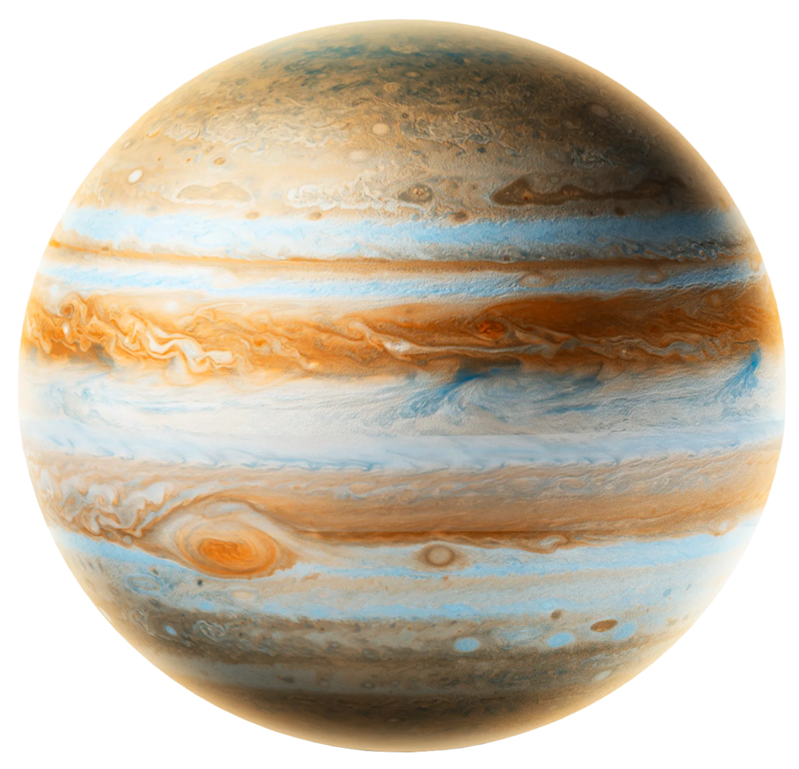

Mars
Mars is the fourth planet from the Sun and the second-smallest planet in the Solar System after Mercury. In English, Mars carries a name of the Roman god of war, and is often referred to as the "Red Planet" because the reddish iron oxide prevalent on its surface gives it a reddish appearance that is distinctive among the astronomical bodies visible to the naked eye. Mars is a terrestrial planet with a thin atmosphere, having surface features reminiscent both of the impact craters of the Moon and the valleys, deserts, and polar ice caps of Earth.

Jupiter
Jupiter is the fifth planet from the Sun and the largest in the Solar System. It is a giant planet with a mass one-thousandth that of the Sun, but two-and-a-half times that of all the other planets in the Solar System combined. Jupiter and Saturn are gas giants; the other two giant planets, Uranus and Neptune are ice giants. Jupiter has been known to astronomers since antiquity. The Romans named it after their god Jupiter. When viewed from Earth, Jupiter can reach an apparent magnitude of −2.94, bright enough for its reflected light to cast shadows, and making it on average the third-brightest object in the night sky after the Moon and Venus.